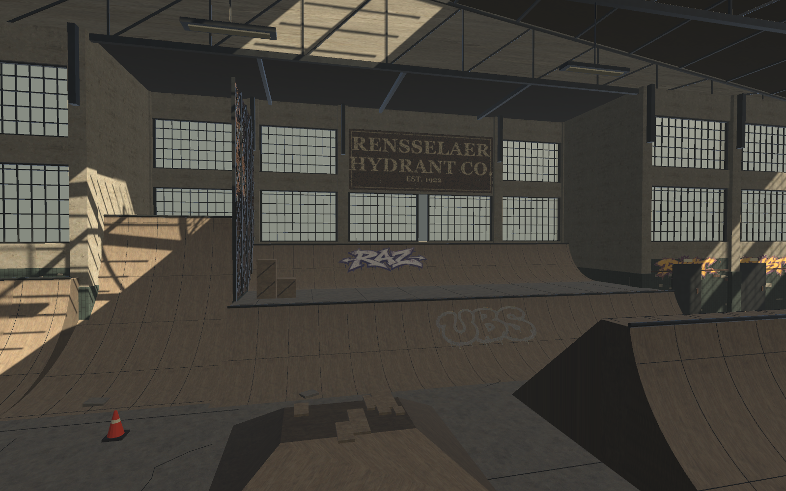
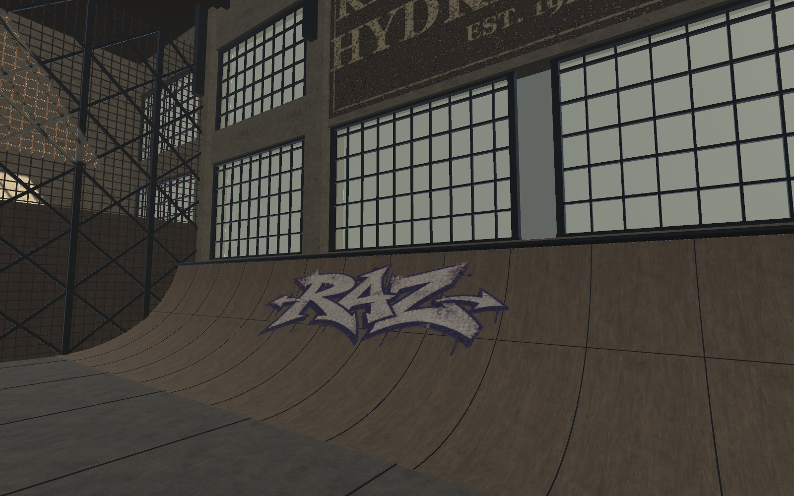
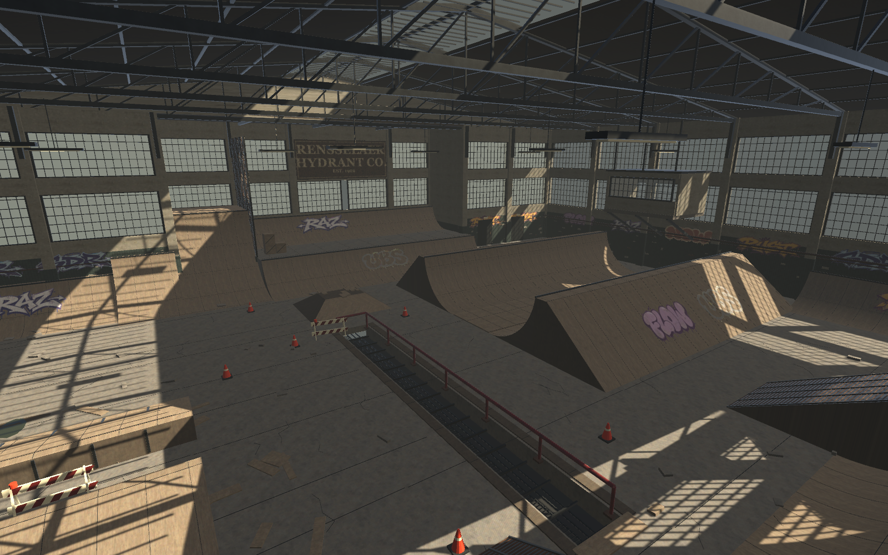

WAREHOUSE / STRUCTURE AUDIT / 03
墙边不是一条连续坡道：凹入开间与双层平台
你的判断成立。上一版北侧墙面被做成连续平面，导致招牌前后的水平平台、左侧高坡所在开间和门下低平台缺失。本次直接在原视频暂停查看 40 个不同时间点（1:28–2:53，左右分屏分别观察），再用你提供的三张新图与原全景复核。
方法：约每 2–3 秒交错取样；上台与落台处加密。时间以播放器显示的整秒为准。不是自动摄影测量、不是 40 个独立相机标定，也没有提取原游戏网格。3:03、3:13、3:23 为谈话画面，3:33 已转入另一场地，这四处不计入 40 个仓库样本。
结论分两层：前后坡面分离、可进入的水平平台、侧向栅格围护、门下转角低台有视频证据；平台米制尺寸、墙体精确退进量、背面的完整构造仍是重建估值。
关键结构证据
| 区域 | 画面依据 | 修正 |
|---|
| A 招牌下方平台 | 1:36 可见前坡后平面；2:12 人物进入后坡；2:15 落在围护旁平面。 | 前坡 → 水平平台 → 后坡；后墙退进，移除原封堵墙。 |
| B 左侧窄高坡开间 | 1:30 正面；2:35 侧向围护；2:40 高坡、围护、前后低坡同框。 | 独立高坡与后平台；增加有深度的侧墙和栅格围护。 |
| C 双门下的低平台 | 1:43 台沿拐弯；1:58 与积水、跳台同框；2:12 双门与前坡并列。 | 独立 L 形低台，门底对齐台面。 |
如何理解这段墙
原图与本次重建
 原图：左半屏招牌左侧高坡；右侧门下平台。两分屏的镜头方向不同。
原图：左半屏招牌左侧高坡；右侧门下平台。两分屏的镜头方向不同。

本次：左侧窄高坡与围护、中央双坡间平台、右侧门台。相机不是原视频标定相机，不能用像素位置直接评价尺寸误差。
 原图：前方 UBS 坡面与后方 RAG 坡面、窗面存在纵深间隔。
原图：前方 UBS 坡面与后方 RAG 坡面、窗面存在纵深间隔。

重建平台内部：独立后坡和侧向围护；平台有实体碰撞。
修改前后，同一个总览相机
 修改前：北墙连续，缺少向后的平台空间。
修改前：北墙连续，缺少向后的平台空间。

修改后：增加局部退进和独立高度层级。其他设施的精确比例不由本次修改证明。
当前模型中的估值
| 构件 | 模型参数（Unity 米） | 证据边界 |
|---|
| 招牌前坡 | X −7…15；起点 Z 15.4；高 2.6 | 相对高低和朝向有证据；长度、半径估算。 |
| 中间平台 | Y 2.6；Z 约 18.86…24.1 | 平面存在且可到达为高置信；纵深未标定。 |
| 招牌后坡 / 后墙 | 后坡基高 2.6、增高 2.4；后墙 Z 28 | 后坡与前坡分离确定；整段墙后退 7 米为建模假设。 |
| 左侧高坡 | X −13…−7；高 6.4；顶平台延伸至 Z 27.7 | 窄且高确定；实际尺寸和顶平台深度仍需标定。 |
| 门下平台 | 高 0.9；宽段 X 15…28；沿东墙转角 | 低于木坡的独立台面可见；完整轮廓估算。 |
验证与仍未解决的问题
已保存独立场景和预制体；重新打开场景验证网格、材质、坡道法线与碰撞。新增检查涵盖六处平台落点、进入凹口的路径和后墙退进，避免旧墙仍在碰撞层封住平台。详细结果见 validation.txt。
重新审视上一轮结论：1:37、2:18、2:25 的金属通道与两侧坡面同框，提示“通道已准确归入南侧入口”的说法过强。本次只修正证据充分的北侧平台与墙体；通道归属、半管边界以及整体建筑比例仍需专门做多点相机匹配。当前碰撞检查通过不等于参考布局完全相同。
没有验证滑板或 Leap Motion 控制器的实际手感。红蓝整面颜色按比赛占领效果处理；自然木色和再创作涂鸦不是原游戏贴图的像素复刻。视频存在剪辑、视角滚转、人物和主持人遮挡，不适合把所有帧直接当作连续摄影测量输入。
场景：WarehouseRecreation.unity · 环境：WarehouseEnvironment.prefab · 取样记录：40 帧 CSV · 生成器：辅助脚本（已按要求删除）。旧版本位于 Source~/BeforeRecessAudit~。
全部 40 个取样记录
点击时间可回到视频相应位置。表中“观察”是画面内容，“推断”是基于该画面的判断；被遮挡的画面也保留，避免只挑选支持结论的帧。
| 时间 | 观察 | 推断 / 限制 |
|---|
| 1:28 | 左：招牌左侧窄高坡、后退窗面；右：一列墙边坡道。 | 高坡和前方低坡不能合并为等高连续坡。 |
| 1:30 | 左：高坡位于两侧边界之间，招牌区域在其右侧。 | 凹入开间存在；绝对深度不可由此单帧确定。 |
| 1:33 | 左：门下直立台边与双跳台；右：沿墙坡道侧视。 | 低装卸台与弧形坡道是不同设施。 |
| 1:35 | 左：UBS 前坡与后方窗面；右：金属带与斜面交界。 | 前坡后仍有空间，不能直接封墙。 |
| 1:36 | 左：腾空俯视前坡顶后的平面、围护；右：金属斜道侧面。 | 确认前坡顶之后存在水平面。 |
| 1:37 | 左：前坡贴近视角；右：金属斜道、沟槽和红管同时出现。 | 金属通道归属需重新标定，不能以旧版检查结论代替证据。 |
| 1:38 | 左：沟槽、中央低设施、远墙；右：带箱子的抬高延伸段。 | 局部延伸段高于相邻墙边低坡。 |
| 1:40 | 左：抬高段侧缘；右：弧面和箱子平台俯视。 | 高低坡道相接而非统一高度。 |
| 1:43 | 左：墙边滑行；右：双门下的低平台，台沿转向右墙。 | 支持低平台呈转角/L 形的判断。 |
| 1:45 | 左：沿墙红色管道、悬挑办公室；右：前坡和后方围护。 | 办公室、墙管和地面平台分属不同高度。 |
| 1:48 | 双方贴墙特写，场景大部被人物和墙面遮挡。 | 只能补充材质和立面，不能推出平面布局。 |
| 1:50 | 左：天花近景；右：全场高位视角，箱子延伸段与招牌左侧围护同框。 | 确认凹口相对招牌、沟槽的位置。 |
| 1:53 | 左：栏杆与低前坡；右：双跳台附近地面。 | 用作设施相对位置交叉核对。 |
| 1:55 | 左：红管终端、箱子延伸段、栅格围护；右：坡面近景。 | 围护与高台相邻，不能建成任意位置的平面门贴片。 |
| 1:58 | 左：建筑转角；右：双跳台、积水、门下平台同框。 | 积水属于双跳台侧，门下平台独立于前弧坡。 |
| 2:00 | 左：积水侧回看办公室和大设施；右：前红坡、后蓝坡、厂牌。 | 两道坡面在纵深上明显分离。 |
| 2:03 | 左：中央设施和周边低坡；右：围栏拐角与台边。 | 平台前沿存在可见转折。 |
| 2:05 | 双方靠墙近景。 | 只用于连续运动定位；不作为尺寸证据。 |
| 2:08 | 左：中央红管和双跳台；右：坡面近景。 | 辅助定位，凹口本体被遮挡。 |
| 2:10 | 左：前坡与后坡之间可见灰色水平面及箱子；右：坡面近景。 | 平台不是背景贴图，前后坡之间有实际间隔。 |
| 2:12 | 左：人物已经到达招牌下后坡；右：前坡、后坡、双门同时可见。 | 后坡确实可进入；双门位于凹入区右侧的前置墙段。 |
| 2:13 | 左：后坡近景；右：前坡、后坡、围护与厂牌。 | 确认后坡位于平台后缘。 |
| 2:14 | 左：后坡侧缘和平台表面；右：前坡近景。 | 补充后坡到平台的连接。 |
| 2:15 | 左：人物落在栅格围护旁的平面，向大厅开放；右：坡面。 | 确认平台可站立且通向大厅。 |
| 2:16 | 左：离开该区后的大厅；右：中央红管与坡道。 | 将平台运动轨迹与大厅固定设施关联。 |
| 2:18 | 左：两侧坡面之间的金属铺面/通道；右：中央低设施。 | 金属通道与半管/坡道连接需专门复核。 |
| 2:20 | 左：办公室下墙管附近；右：墙边长坡。 | 周边墙并非处处具有同一台面高度。 |
| 2:23 | 左：另一墙边坡段；右：腾空俯视，部分设施被遮挡。 | 此处游戏计时有剪辑跳变，不按连续摄影测量轨迹处理。 |
| 2:25 | 左：墙边俯视；右：金属通道、侧坡与背墙同框。 | 进一步提示旧版通道归属判断不宜视为已通过。 |
| 2:28 | 双方坡道与墙面特写。 | 不能独立支持凹口深度。 |
| 2:30 | 左：门旁的小高台/悬挑面；右：大坡面。 | 另有高处门台，但其位置与尺寸证据不足，本次不额外补造。 |
| 2:33 | 左：KDR 涂鸦墙边坡；右：窗墙及坡道边缘俯视。 | 与招牌凹入区区分，防止重复布置。 |
| 2:35 | 左：箱子平面和侧向栅格围护近景；右：大坡前景。 | 围护具有纵深方向，并非只是一张正面铁门。 |
| 2:38 | 左：积水旁墙面；右：沟槽、双跳台及远墙。 | 复核设施分区，未提供新凹口尺寸。 |
| 2:40 | 左：高窄坡、侧围护、低前坡、后坡、厂牌同时出现；右：墙边长坡。 | 最强的多层轮廓证据，确认高窄坡与招牌平台应拆成独立对象。 |
| 2:43 | 左：低坡近景；右：墙管和高处建筑。 | 补充高度分区，尺寸仍不确定。 |
| 2:45 | 左：箱子延伸段和两侧低坡；右：另一墙边平台。 | 确认局部增高、前后错位，不应整条拉齐。 |
| 2:48 | 左：KDR 墙坡；右：相邻坡段高差。 | 高差可见，连接半径未测定。 |
| 2:50 | 左：办公室下方墙管；右：远处延伸段与厂牌墙。 | 跨场景视角核对固定参照关系。 |
| 2:53 | 左：坡面、窗格；右：半管上方悬挑办公室。 | 办公室属于高处悬挑体，与墙内低平台区别明确。 |